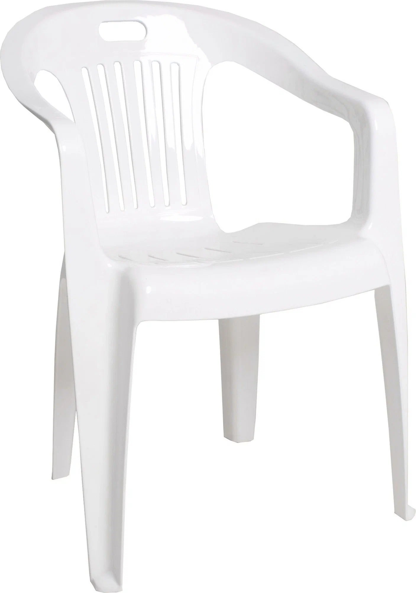

O нас
История
|

Производим мебель, которая сочетает в себе эстетику и практичность. Наши коллекции – это результат продуманного выбора дизайна, цвета, текстуры, деталей и функциональных механизмов, которые вместе создают пространство гармонии и комфорта.
Опираясь на многолетний опыт и применяя передовые технологии, мы выпускаем продукцию, соответствующую всем стандартам качества.
Примеры наших решений:
Кухни на любой вкус
Гармония стиля и функциональности |
Наши предложения: |
Модульные кухни
Широкий выбор |
Комплекты кухонь
Современные гарнитуры |
Кухонные гарнитуры
Столы и стулья для кухни |
Я не знаю, половник себе купи |
О нас:
-
⭐Надежный партнер
19 лет на рынке производства и оптовых поставок
-
📦Широкий ассортимент
Свыше 3 000 наименований изделий для кухни, спальни, молодежной, гостиной или прихожей
-
🤝Качественные материалы
Сотрудничество только с проверенными поставщиками
История и производственные мощности
Мебельная компания «Интерьер-Центр» изготавливает корпусную мебель с 2006 г. Компания располагает тремя цехами в г. Пензе. Площадь производственно-складских помещений — 50 тыс. м².
- Год основания: 2006
- Количество цехов: 3
- Местоположение: г. Пенза
- Общая площадь помещений: 50 000 м²
Производственные показатели и ассортимент
Предприятие производит 800 тыс. единиц мебели в год. В ассортименте продукции компании «Интерьер-Центр» более 3000 наименований.
- Годовой объем производства: 800 000 единиц
- Количество наименований в ассортименте: более 3000
- Основные категории продукции:
- Кухонная мебель
- Мебель для спален
- Детская мебель
- Мебель для гостиных
- Системы хранения
- Столы
- Металлические стулья
|
Реклама:


|